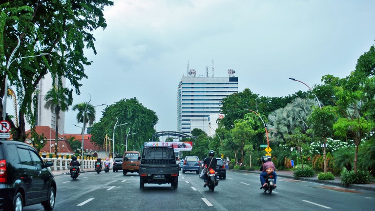

A little bit of background
To make it easier to remember, let's just call me Ravi. I am 19 years old, and I am going to be 20 this year, on 11th of May. Talk about my birthday, I never really liked birthday parties and all that, but I really appreciate the kind words from my friends and families, as long as it is not posted on social media, in which I do not really fond of since I prefer to keep everything just for me, and yes, fun fact, that makes me an introvert. But, here, I will tell you everything about me.
As a matter of fact, I am from Indonesia. Yes, the neighboring country. I do not really know if people here in Malaysia at a first glance would mistake me for any regular Malaysians, but just in case. Anyway, I am from the island of Java, or to be exact, East Java, and the city of Surabaya, the capital city of East Java province. Big, crowded, and bustling with activities. I would say it is far more bigger and crowded than Johor Bahru. And, here is a picture.
Moving on ... Let's continue to talk about myself.
So, coming from abroad makes me an international student. And currently, I am studying software engineering in Universiti Teknologi Malaysia. a branch of computer science discipline that I would spend majority of life making new stuffs, doing research, and other things. Not strictly in software engineering but computer science as a whole. So, why did I choose software engineering or computer science? Well, that is quite a long story to tell.
So, it all started when I was in the 12th grade, conversation regarding career aspirations is buzzing, to the point where that type of friend that are laid-back or just go with the flow even talk about it. At that point, my mind is already made up and it gets narrowed down into computer science. The reason why? Because well, if I am being idealist, then the answer is how this field has infinite possibilities for innovation that could not only bring merits on the business side, but also for the society where problems are countless and thus, computer science can be part or the solution for said problems. And, if I am being pragmatic, well, since the demand for employment is quite high and the trend is more likely to rise, it is safe to say that computer science has lots of potential for financial security, with anticipated tougher competitions.
Back to top
My Interests
As of currently, I am very interested in machine learning and deep learning because I think the field is so intriguing with so much potential and I am totally aware that understanding or implementing the concept needs fundamental knowledge to succeed. And so, I am starting small, polishing my craft on the fundamentals before I go to the next level. And what are those?
So, I have been learning some basic math for computer science, concepts like algorithms, and also competitive programming. While the first two are obvious, competitive programming, in my opinion, not only can improve my data structures, algorithms, and math, among other things, but also it trains me to solve problem with the right approach plus faster. Because being efficient is a valuable skillset.
Anyway, here are some resources that could be useful in the future.
| No | Skills |
|---|---|
| 1 | Algorithms |
| 2 | Data Structures |
| 3 | Competitive Programming |
Back to top
My Achievements
There quite lots of achievements that are irrelevant to bring up as they are quite old to begin with. So, here is an achievement of mine, quite recent, and not about this web profile, although for me, this counts as my achievement.
So, by date, that is a video, created by me, that reached 3k likes! :D . I know, it is not much and it is not computer science related, but I will, in the near future!
Back to top
My Aspirations and Dreams
There are of course lots of aspirations and dreams before even I delved into this field. Like getting a job at Google, scholarship to study at top US universities, found a CS-related breakthrough, and many more. Well, I know I am still getting started, and I will, in the future, be a better version of myself to achieve all of them.
Back to top